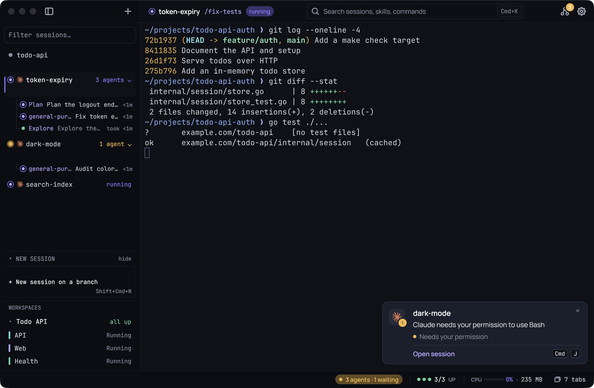

The terminal that knowswhat your agents are doing.
Claude Code and Codex run in your tabs. Kaze sees which one is working, which one is waiting for you and which one is done, through their own hooks, so you never have to check each tab. They can message each other and start helper agents, and you watch all of it from one sidebar.
Run as many agents as you like. Through Claude Code’s and Codex’s hooks, Kaze asks for your attention only when there’s something to answer or read.

Your agents tell Kaze. Kaze tells you.
No polling, no plugins. A line in Claude Code’s settings is all it takes, and Settings adds it for you.
Your agent
The agent speaks up
Claude Code’s hooks call Kaze when it asks for permission, finishes, or starts a subagent.
kaze notify needs
Kaze
You jump straight there
A card names the session and what Claude said. One key opens the newest one.
CtrlShiftJ · ⌘J
You
Everything else is one key
Sessions, servers, your Claude Code skills and slash commands, and Kaze’s own actions.
CtrlShiftK · ⌘K
Built around the agent. Still just a terminal.
Any shell, any program. The parts below only show up when an agent is running.
Spaces and tabs
One space per project, plus Shell, with only its tabs above the terminal. Search and + stay in the sidebar header.
Agents group as Needs you, Working and Idle; click one to jump to its tab. Keep the sidebar left, right, or folded to session tiles.
In Settings, Appearance, Sidebar, turn on Animated status to spin and pulse working marks. It is off by default to keep idle CPU at zero.
Orchestration
Claude Code and Codex message each other and start worker agents in new tabs within their own repository space. Other spaces are refused unless you allow them in config.toml. You watch workers nested in the sidebar.
Name it. The same folders, the same servers, the same log tail.
Run it from Settings or the palette.
Find it. Each member gets a line in the sidebar and a dot in the status bar. Click one to open it as a tab under your session.
One agent can start others. You stay in charge.
Ask. Claude runs kaze run for a Codex reviewer and a Claude test runner.
Allow. Enable Settings > Agents > Let agents start workers; Kaze asks before each agent’s first start.
Watch. Answer trust or approval dialogs, read reports with kaze wait, and stop workers from the worker count.
Claude Code and Codex only: up to 4 workers per agent, 8 total; templates in the config folder.
Workers close with their parent and never reopen after a restart. Windows needs native claude.exe for Claude Code.
An idle Kaze uses no CPU. It redraws only the cells that changed, caches its glyphs, and the whole app is about 14 MB.
Go and Gio, for macOS and Windows. MIT licensed, small enough to make your own.
What’s new.
Kaze checks for new versions by itself and updates in place from Settings, Updates.
0.49.1Latest
New sessions open where you are
Ctrl+T, Cmd+T and the sidebar plus open the new session in the space you are in, so from a repo you no longer land in the shell space and cd back.
A new session joins its space at once instead of showing in the shell space for a few seconds first.
0.49
A clearer Workspaces list
Each workspace in Settings, Workspaces is now one card. Open it to see its tabs on two lines, with the folder, command and wait tag, and Edit and Delete inside the card.
A collapsed card lists its tab names, the All, Open and Closed filters sit on their own, and Run at startup lives in the card's menu.
A button you click no longer keeps a purple ring; the ring only shows when you move with the keyboard.
0.48
Agents stay in their own space
An agent can list and reach only tabs in its own space through the kaze command line. Other spaces are refused unless you set [control] cross_space = true in config.toml.
A space is one repository. Workers share their parent's space, and tab names only have to be unique within a space.
The Claude row icon now matches the real Claude Code mascot, with a wide body, arms, small eyes and four feet.
Settings, Appearance, Sidebar has an Animated status switch (animate_status). Turn it on to spin and pulse the working mark while an agent works. It is off by default; leaving it off keeps idle CPU at zero.
Settings, Workspaces shows one collapsed row per workspace. Click a row for its tabs and commands; search and state filters appear as the list grows.
The interface now uses Geist. The terminal, code, paths and commands stay in JetBrains Mono.
Documents you open now sit under the tab that opened them instead of under the whole space.
A lightweight terminal for macOS and Windows that knows when Claude Code or Codex is running in a tab. It reads their own hooks, so the sidebar shows which agent is working, waiting for you or done, an alert card tells you when one needs you, and agents can message each other and start helper agents in new tabs. Underneath it is a plain terminal: any shell, any program, and nothing extra runs until an agent does.
Is Kaze finished?
Kaze is in beta. It is my daily terminal and it ships often, but things can change.
Which agents does it work with?
Claude Code and Codex, through their own hooks. Settings checks your Claude Code setup and adds what’s missing. Any other tool runs fine as a normal terminal program, just without the alerts.
Is it free?
Yes. Kaze is free and open source under the MIT license. The code is on GitHub.
Why does my computer warn me when I open it?
Kaze isn’t signed by Apple or Microsoft yet, so the first launch asks you to confirm it once. The step-by-step guide shows exactly what to click. Updates don’t ask again.
How does it update?
Kaze checks for new versions by itself. Open Settings, Updates and it replaces itself in place, keeping your config and sessions.
Will it slow my machine down?
It’s built not to. Kaze is about 14 MB, draws on the CPU and redraws only what changed, and runs no timers while idle. It shows its own CPU and RAM in the status bar so you can check.
Let it blow through your day.
Download Kaze for macOS 13 or newer (Apple Silicon and Intel) or Windows 10 and 11. Or build it from source with Go 1.27 or newer.
Kaze isn’t signed by Apple or Microsoft yet, so the first launch asks you to confirm it once.
git clone https://github.com/beefysalad/kaze-terminal.git
cd kaze-terminal
./tools/package-macos.sh # macOS
go build -ldflags "-H=windowsgui" -o kaze.exe ./cmd/kaze # Windows
Opening Kaze the first time.
Your computer asks you to confirm Kaze once. It takes a minute, and you won’t see it again, updates included.
macOS
Download and unzip. Click Download for macOS. Safari unzips it for you; otherwise double-click Kaze-macOS.zip in Downloads.
Drag Kaze into Applications. Open it from there, not from Downloads: macOS runs apps from Downloads in a read-only copy, and Kaze can’t update itself there.
Open it, then click Done. macOS says “Kaze” Not Opened. Apple could not verify “Kaze” is free of malware. Click Done, not Move to Trash.
Allow it in Privacy & Security. Open System Settings › Privacy & Security and scroll down to “Kaze” was blocked to protect your Mac. Click Open Anyway and confirm with your password or Touch ID.
Click Open. Kaze starts, and macOS won’t ask again.